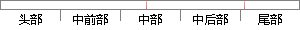

" % (userStatus, userId)
片段位置图

相似结果|
相似片段 1：>——
相似片段 2： 不存在的用户 */userStatus = UserStatus.NoExists;/*返回 XML文档格式的认证结果信息*/return GetAuthXmlDocument(userId
相似片段 3：录到服务器，显示状态是指用户的好友可以看到的用户的状态。表3—7即为用户状态表：表3—7用户状态表USERID NU船ER 否 用户名USERSTATUS TEXT 否 实际状态SHOWSTATUS TEXT 否 显示状态6、好友验证表(ADDFRITYPE)。
相似片段 4：（UserID，EmployeesID，UserName，UserPassword，UserTypeID，UserStatus）3.3 数据库物理结构设计数据库物理结构设计阶段的主要任务是，根据选用的关系型数据库管理系统锁提供的 DDL语言，创建数据库，表及索引等。
|
※ 片段修改建议 ※
近似词参考：